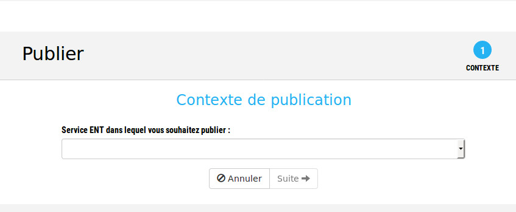
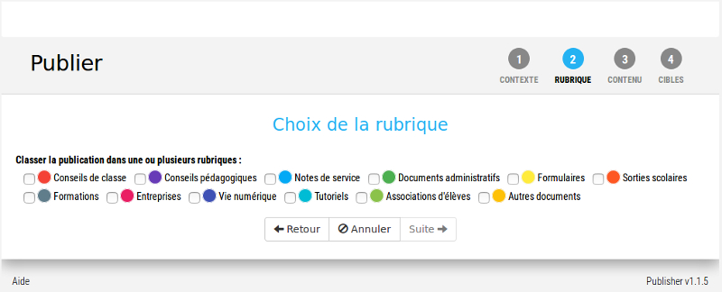
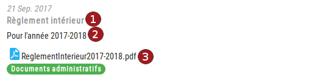
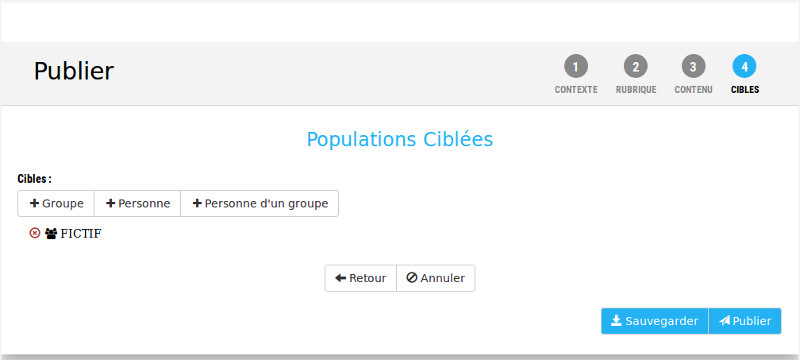
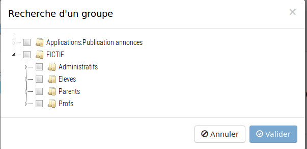

Publier un ou des documents
La publication de documents permet à l'établissement de mettre ces
documents à la disposition d'usagers ciblés, sans limite de temps
(contrairement à une actualité qui a une durée de vie limitée). Les
documents ainsi publiés seront accessibles aux utilisateurs dans le
service "
Documents de l'établissement".
Les rubriques dans lesquelles sont placées les documents ainsi que l'ordre
d'apparition des documents dans chaque rubrique sont définis dans le
paramétrage du contexte.
La
publication d'un ou de plusieurs documents se fait depuis la page
d'accueil de l'application ou depuis le menu, en cliquant sur "Publier".
4 étapes guident le rédacteur de la publication.
La première étape

La première étape consiste à choisir le contexte de publication (Documents)
et l'établissement sur lequel on souhaite publier l'actualité.
Pour ceux qui peuvent publier sur plusieurs établissements, il faudra
choisir dans la liste l'établissement concerné par la publication.
Pour passer à la seconde étape, il suffit de cliquer sur le bouton "Suite".
La seconde étape
La seconde étape consiste à choisir la ou les rubriques dans la ou
lesquelles sera publié le document.

Un document peut être placé dans une ou dans plusieurs rubriques, en
fonction des besoins de l'éditeur.
En cliquant sur "Suite", on passe à la 3ème étape.
La 3ème étape
La 3ème étape est celle de la saisie du contenu de la publication du ou
des documents. Il s'agira de remplir les champs suivants :
- Titre
: titre de la publication.
- Description : texte qui permet de décrire le ou les
documents publiés.
- Début de publication : date à partir de laquelle le ou
les documents seront accessibles aux publics cibles.
- Fin de publication : date optionnelle après laquelle le
ou les documents ne seront plus accessibles. Si aucune date n'est
spécifiée, la publication du ou des documents n'aura pas de fin
prévue.
- Accès public via les flux RSS : permet d'afficher la
publication sur un site externe à l'ENT (site institutionnel, blog,
…).
- Document(s) : en cliquant sur le bouton "Parcourir", il
sera possible de sélectionner le ou les documents (fichiers) à
publier. Il est également possible de simplement glisser/déposer un document depuis son poste de travail.

En cliquant sur "Suite", on passe à la
dernière étape.
Si le bouton "Suite" n'est pas accessible, c'est qu'il y a une
erreur dans la saisie et qu'il convient de regarder d'où elle provient
(un message d'erreur doit être affiché sous le champ qui pose problème).
4ème étape
Cette dernière étape consiste à définir les populations qui pourront
consulter le ou les documents via le service "Documents de
l'établissement" (populations ciblées).
 Dans cet exemple, le ou
les documents seront publiés à l'ensemble de l'établissement.
Pour publier le ou les documents à une personne, il suffit de cliquer
sur "
+ Personne" et de saisir son nom et/ou prénom dans le
formulaire de recherche (sans accents et avec un minimum de 3
caractères).
Pour publier l ou les documents à un groupe d'utilisateurs, il faut
cliquer sur le bouton "+ Groupe" et choisir le groupe dans
l'arborescence (voir plus bas). Plusieurs groupes peuvent être
sélectionnés.
Il est également possible de choisir une ou des personnes en les
sélectionnant dans un groupe au cas où il y a doute sur les nom de ces
personne, par exemple.
Une fois les champs renseignés, le rédacteur
peut cliquer sur un des boutons :
- Sauvegarder qui permet de sauvegarder la publication sans
la publier (brouillon). Le rédacteur pourra ensuite y revenir,
modifier la publication et enfin la publier.
- Attention : si le rédacteur réédite une publication qui a
déjà été publiée et appuie sur le bouton "Sauvegarder", le ou les
documents ne seront plus publiés et seront à l'état de brouillon.
- Publier qui permet de sauvegarder et de publier le ou les
documents, sachant que :
- si le rédacteur est éditeur ou gestionnaire dans
le contexte ou la rubrique, le ou les documents seront directement
publiés
- si le rédacteur n'a que le rôle contributeur pour le
contexte ou la rubrique, la publication devra être validée par
un gestionnaire du contexte ou de la rubrique (modération).
Choix d'un
groupe cible
Le choix d'un groupe se fait dans une arborescence simplifiée des
groupes utilisateurs de l'ENT :

cette arborescence peut être dépliée pour pouvoir choisir un groupe
plus fin que les groupes de type de population affichés.